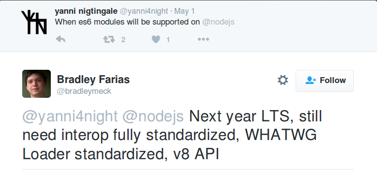

node v6
- Supports 93% of ECMAScript 2015

By Hugo Agbonon (@codeheroics)

CommonJS: What node.js has been using
const fs = require('fs')
const { networkInterfaces } = require('os')
const msg = 'Hello'
module.exports = { msg }ES Modules: The standard from now on
import fs from 'fs'
import os, { networkInterfaces } from 'os'
export const msg = 'Hello'Seems simple to move from one to the other, right?
The same code won't work the same way whether it's in an ES Module or a CommonJS Module
import and export is not enough: You can have ES modules without those keywordsconsole.log(`Module loaded ${Date()}`)is a valid ES Module
'use module''use module'The current official node proposal is for .mjs (though it is a draft and the implementation hasn't started), even though there are strong opinions "In Defense of .js"
required or imported
(& Follow @bradleymeck a @nodemjs for more infos on this!)